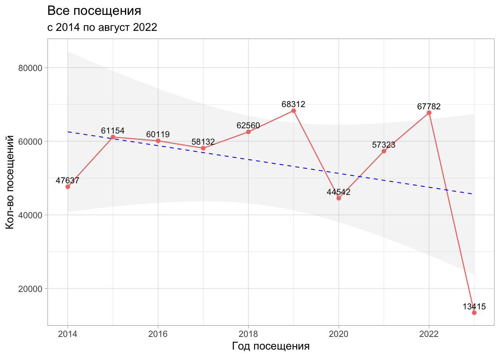
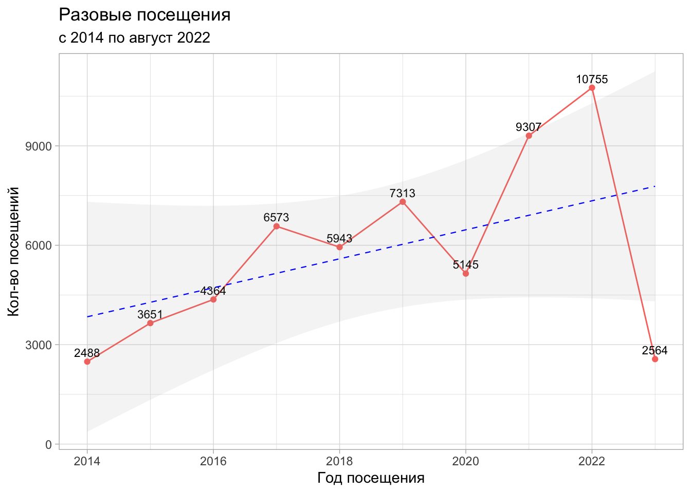
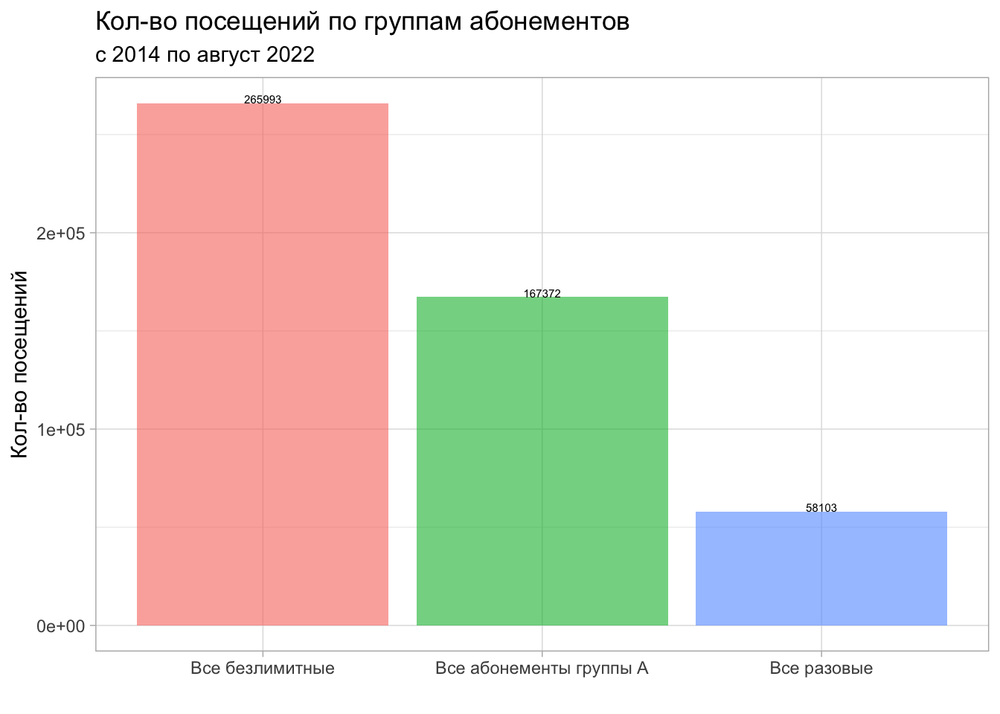
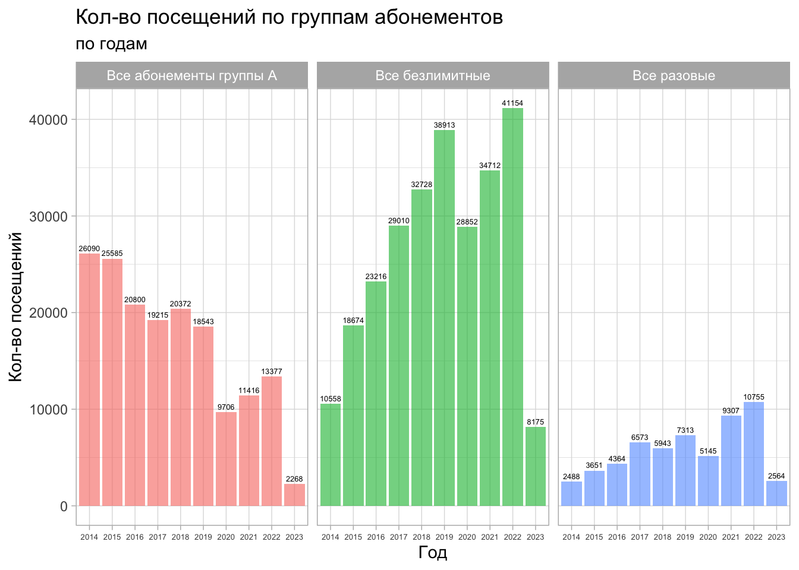
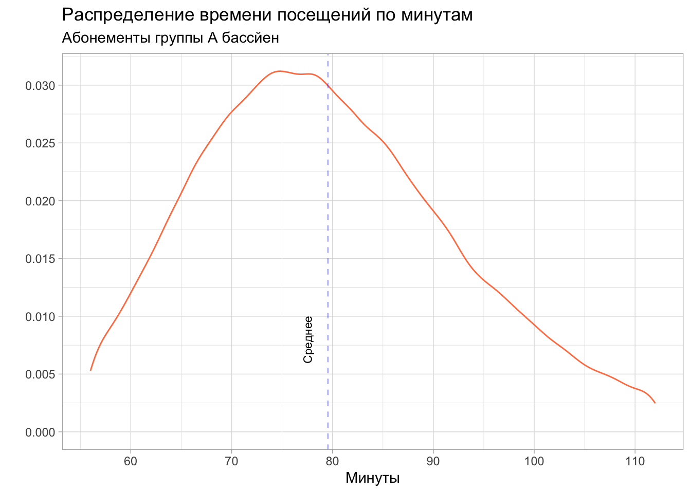
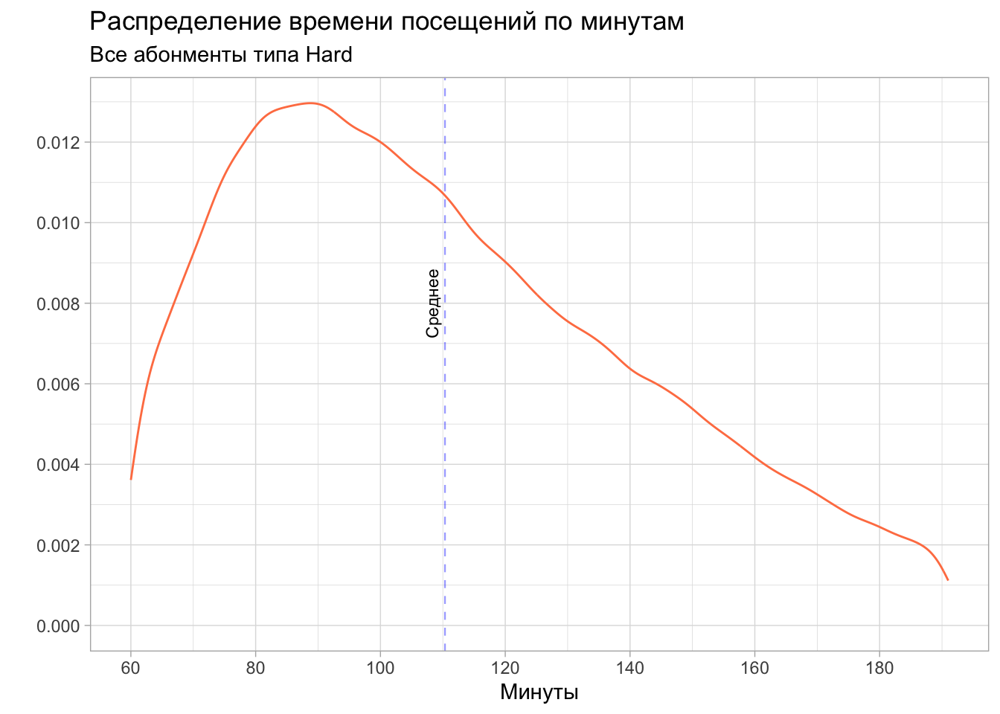

1 Журнал посещений
1.1 Знакомство с данными
Мы начнем с отчета, где фиксируются данные посещений спа-центра. В этом датафрейме мы имеем следующие данные:
Обратите внимание
Данные за 2022 год предствалены до 2023-01-31 23:56:17
Внимание
Хотелось бы напомнить, что с марта по июль 2020 года была пандемия COVID-19. Поэтому на все показатели 2020 нужно обращать внимание с учетом этого события.
В нашей таблице содержатся следующие столбцы:
Заметка
Мы выделим наиболее важные для нашего понимания
id- номер картыstart_of_visit- начало визитаend_of_visit- окончание визитаduration_visit- продолжительность визита (в минутах)сard_type_2- преобразованный тип абонементаsegment- сегмент гостя
В наших данных есть много пропущенных значений в переменной id и сard_type_2.
Есть несколько причин этого:
В начале работы спа-центра были созданы карты
СаунаиАноним, к которым не привязывался номер картыОтсутсвие названия абонемента в переменной сard_type_2 связано с тем, что по картам Сауна, оказывались услуги типа “Оформить визит”, которые не требуют продажи абонемента.
Если мы посмотрим на данные, например, 2019 года, то такой проблемы не будет.
Переменная сard_type_2
У нас есть переменная сard_type_2. Это перекодированная версия столбца сard_type.
Эта операция нам понадобилась, чтобы привести к единому формату название абонементов, которые в разный период времени имели различные наименования, но по сути являлись одним и тем же.
Ниже мы посмотрим какая доля посещений приходится на каждый вид абонемента:
22% посещений спа-центра приходится на годовой безлимитный абонемент. Стоит отметиь, что это абонементы “Серебро” и “Безлимитный”.
Давайте посмотрим на тоже самое, но в разрезе годов.
Здесь нужно отметить, что до 2016 года в спа-центре не было годовых безлимитных карт, но они есть в нашем отчете. Это проблема связана с тем, что вместо того, чтобы создать новые абонементы - переименовали старые. Это не сильно повлияет на наш отчет в дальнейшем. Но будем иметь это ввиду на будущее.
Кроме того, мы можем заметить, что до 2017 года наибольшая доля посещений приходилось на абонементы типа А (А10, А5, А4 и прочее). Абонменты типа Not, с высокой долей вероятностью, - различные разовые посещения.
Визуализируем наши данные по типам карт. Предварительно уберем из данных все абонементы, которые имеют долю не менее 5% посещений в каждом годе.

Мы видим, что доля посещений на безлимитные абонеменнты 12 мес увеличивается с каждым годом. Посмотрим, как это выглядит в абсолбтных цифрах. Выделим только пермеменную Hard_12
Обратите внимание
Hard_12 - содержит в себе как карты типа “Серебро”, так и карты типа “Золото”. Мы объединили их по причине того, что карты “Золото” были убраны из продаж. То есть, часть аудитории в настоящее время пользуется обычными безлимитными годовыми абонмеентами, что отражается на доле посещений.

Вторыми по посещаемости в наших данных являются карты А8_pool. Думаю, что есть смысл посмотреть динамику посещений по всем картам типа А (за исключением групповых занятий).

Мы видим, что количество посещений по данным абонементам с каждый годом сокращается. С 2016 года это свзано с введением безлимитных абонементов.
Посмотрим на общее количесво посещений из года в год.

Максимальное количество посещений было в 2019 году. По остальным годам видно, что количество посещений варьируется от 57 323 в 2021 году до 62 580 в 2018 году.
Давайте посмотрим на динамику разовых посещений. Возьмем все разовые посещения. Исключим только групповые занятия.

Мы видим, что в данном случае, динамика разовых посещений положительная. Давайте посмотрим на структуру разовых посещений.

Мы видим, что разовые посещения в бассейн One_pool имеют наибольший вклад в единоразовых посещениях нашего комплекса.
Ранее мы смотрели на годовые абонемнты Hard_12, так как они имели наибольшую долю посещений. Было бы интересно посмотреть на все безлимитные абонементы.

Понятно, что большое количество посещений приходится на годовые абонементы. Но нам интересна динамика посещений и по другим безлимитным посещениям. Мы видим, что абонемент Hard_3 пользуется большей популярностью, чем Hard_6.
Давайте теперь выделим все посещения абонеметов группы А, группы Hard и One (разовые).

Суммируем все посещения по типам абонементов.

Суммируем все посещения по типам абонементов в разрезе годов.

Мы видим, что основынми группами абонементов, по которым чаще всего ходят гости, являются:
Безлимитные абонементы типа
HardАбонементы группа
АРазовые абонементы
One
Делать какие-либо выводы сейчас будет своевременно. Имеет смысл, полученные данные, рассматривать вместе с отчетом о продажах карт, к которому мы перейдем позже.
Переменная duration_visit
Абонементы группы А
В наших данных также имеется перменная, которая отражает продолжительность посещения спа-центра, Мы знаем, что абонементы группы А ограничены временм посещения 45 минут. Плюс время на переодевание. В среднем мы закладываем 80-90 минут на посещение бассейна нашими гостями. Давайте проверим так ли это в среднем:
Посмотрим на график
Мы видим, что среднее время равняется 80 минутам. Стандартное отклонение - 26.9 минут. Это связано с тем, что в данных есть ошибки. Также, мы можем наблюдать данные ошибки и на графике. Причины различны: от некорректной работы ПО до ошибки администратора.
Давайте скорректируем наши данные, а именно отсечем по 5% данных с каждого конца,
Заметка
Таким образом, мы потерям часть информации, но уберем крайние значения. Скорее всего среднее и медиана изменятся не существенно, а графически мы получим более реальную картину.
Наши крайние значения:
Q1 = 55
Q4 = 113
Посотрим как изменилось среднее, медиана и стандратное отклонение и сразу взгляним на график

Мы видим, что существенно изменилось только стандартное отклонение. Остальные показатели остались в пределах первоначальных значений.
Можно заключить, что, в целом, гости, которые посещели наш спа-центр по абонементам группы А, укладывались в рамки того времени, которое мы устанавливали.
Тоже самое должно быть характерно и для абонементов разового посещения в бассейн.
Абонементы разового посещения в бассейн

Мы видим, что гости, которые посещают спа-центр разово, более склонны нарушать правила клуба. Стандартное отклонение посещения - 53.8 минуты, а среднее 86.6 минут.
Мы проделаем туже корректировку с данными, как это было с абонементами гуппы А.

Мы видим, что среднее изменилось не существенно и теперь равняется 81.8. На графике теперь видно, что большая часть посетителей укладывается в рамки 80-90 минут посещения.
Абонементы группы Hard
Абонменты гурппы Hard неограничены во времени и включают в себя как посещения бассейна, так и посещения банного комплекса. Наша гипотеза заключалась в том, что гости не будут находиться в комплексе в среднем более 3 часов (180 минут).
Сейчас мы посмотрим как распределено время посещения по всем абонеметам типа Hard. Далее посмотрим каждый абонемент в отдельности.
Заметка
Данные абонементы имеют выбросы. Много крайне низких и высоких значений. Мы понимаем, что это по большой части ошибки, связанные с разными причинами. Давайте посмотрим на квантили распредения и очистим наши данные от критических значений. В нашем случае Q1 будет равняться 5%, а Q4 - 95% данным.
Мы видим, что 95% данных лежит в переделе 192 минут, то есть все остальные значения, которые больше 192 минут, характерны только для 5% случаев. 5% данных имеют показателоь менее 59 минут.
Исходя из вышесказанного мы отсечем все данные, которые менее Q1 и не больше Q4 и построим график распредлеения.

Мы видим, что основная доля посещений лежит левее среднего, то есть мы можем заключить, что наша гиппотеза оказалась ошибочной, правда, в нашу пользу.